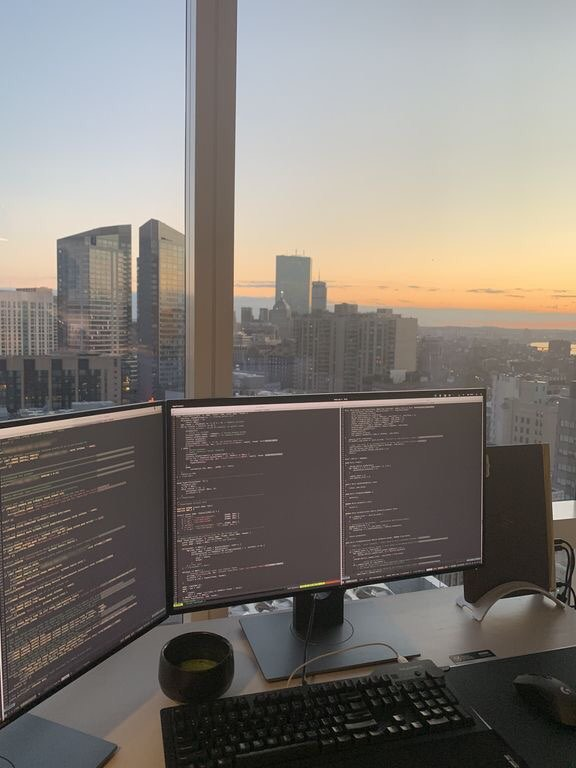

My point of view
LIFE It's precious. It's beautiful. It's full of pains and pleasurespeaking. It's the name of ups and downs. It's the name of dayso and nights. It's the name of happiness and sorrows. It's the name of victory and defeat. Life is not stable. It gets a new fold after a while. It's the one of the facts that everything in life is temporary. If things are going good, enjoy it. Because it will not last forever. If things are going bad, don't worry because it can't last forever either. Life has different turn so it gives different experiences to us. That's why we define life in different ways. Some people think that life is an adventure, dare it. Some people think that life is a struggle, fight it. Some people think that life is a promise, fulfill it. Others have different opinions. Like: Life is a game,play it. Life is a journey, complete it. Life is a mystery, unfold it. Life is a opportunity, take it. Life is a goal, achieve it. Life is a puzzle, solve it. Life is like a song, sing it. Life is a sorrow, over come it. and Life is a spirit, realize it, etc. Life given to us is very special. It's value able. It requires to be maintained. It needs to be embellished.
Since I saw Michaelangelo's David
Im dying to visit Florence, there is so much to be seen.

I would like also to visit Louvre and see Mona Lisa, beside all my travelling wishes im genuinely interested in art especially Renaissance art. Im amazed by Leonardo
And Michaelangelo, my favorite Michaelangelo's piece of art is La Pieta
- Chris Grosser
My small victories
- 1st place- state compentiton in French.
- 1st place - state competition in French accent.
- 1st place - region competition in Maths 2015,2017,2020
- 1st place - region competition in Biology 2015,2017
- 2nd place - region competition in Maths 2016,2018,2019
- 1st place - international competition in acting 2020 in Bulgaria
- 1st place - state competition in Business 2020 MASSUM
- 1st place - region competition for the most books read in a year
- Best student in the Generation 2020
- Scolarship since 2015
- "Top 10" student in my University, with my certificates.
- Best Business Plan 2021, Massum
- Full scolarship FON university And so on and so far......
by me
A student's life is a foundation for learning. A student has to face all types of situations and is trained for the future. I learn to obey, respect and discipline myself. All in all my character is shaped during this period. School life is the best and happiest part of every student. I live with no worries and tensions about the future. I make friends, learn skills, and live life to the fullest. It is the school where discipline is formed. I have learnt to be punctual, follow rules, and perform duties. Most importantly, I acquire knowledge and develop new skills in them. The training from the school life is what makes students turn into better personalities. Student life is the most valuable part in which teachers and parents guide them in the right way and allow them to know what is good and bad for life.My biggest plan for my education is to get my Master studies in La Sorbonne,Paris.
I want to become a software engineer. I am interested in computers. It is a whole new world. Many people continue careers of their parents or grand parents but it is not the case with me. My favourite subjects in school were mathematics, physics, and, of course, computer science. I am not interested in such subjects as geography, biology or chemistry. I have a computer at home and can spend hours working at it. It is much easier to do things on computer, for example to write a composition. You can change the text as many times as you want and you don't need to rewrite everything if you changed something. I think that the profession of programmer can give many opportunities. Computers are the most rapidly changing sphere of modern technology. We are living in the age of information. And I think that the future is just filled with computers. I picture myself as a creative engineer , who can find solutions for many problems and eventually get rich.